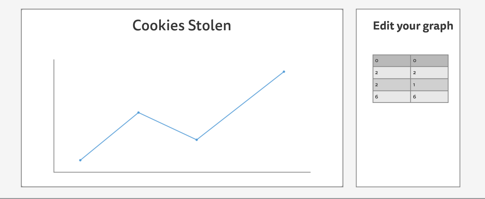

Infographics Web Editor
-
Facultatea de Informatică Iași, Universitatea "Alexandru Ioan Cuza"
Cuprins
1. Descriere
2. Design General
3. Interactiune cu utilizatorul
4. Arhitectura si stocare date
5. Verionare
6. Resurse
Descriere
Aplicația Infographics Web Editor este menită să ofere o interfata prietenoasa prin care utilizatorii pot genera si edita diverse grafice.
Aceasta primeste de la utilizator o sursa de date, care poate fi vizualizata in functie de preferintele utilizatorului, iar mai apoi descarcata intr-un format PNG sau SVG.
Utilizatorul va putea efectua diverse modificari asupra fiecarui tip de grafic disponibil.Ii va putea schimba culorile, sau modul in care sunt afisate datele prin reprezentarea acestora.
Design General
Prima pagina a aplicatiei pune la dispozitia utilizatorului posibilitatea de a a selecta tipul de infografic pe care il doreste sa il genereze.
La urmatorul pas, se face selectarea sursei de date. Aceasta poate fi endpointul catre un API sau unploadul unui fisier CSV sau JSON.
Ultimul pas este generarea efectiva a infogramei si editarea acesteia. De aici, acesta poate sa o modifice usor din panelul din dreapta.
Interactiune cu utilizatorul
Maniera de interactiune cu utilizatorul este una cursiva, acesta avand un traseu bine stabilit de urmat pentru a ajunge la rezultatul final.
Butoanele mari si clare dar si designul minimalist fac usor de folosit aplicatia, care incorporeaza diverse functionalitati fara a pune in incurcatura utilizatorul.
Arhitectura si stocare date
Sursa de date selectata de utilizator este incarcata in memorie, pe partea clientului, nefiind nevoie de un upload efectiv carte un server.
Arhitectura aplicatiei este una de tip serverless, aceasta fiind construita ca un SPA (Single Page Aplication). Pentru a afisa diferite sectiuni de continut, site-ul foloseste un mecanism propriu implementat in JavaScript de injectare a continutului fisierelor partiale HTML in interiorul paginii principale(SPA).
Versionare
Am folosit GitHub pe post de repository al proiectului. Am utilizat Git Bash pentru a rezolva conflictele și pentru a face modicări/adăugări/ștergeri a unui sau a mai multor fișiere din cadrul repository-ului.